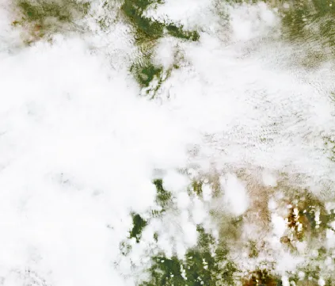
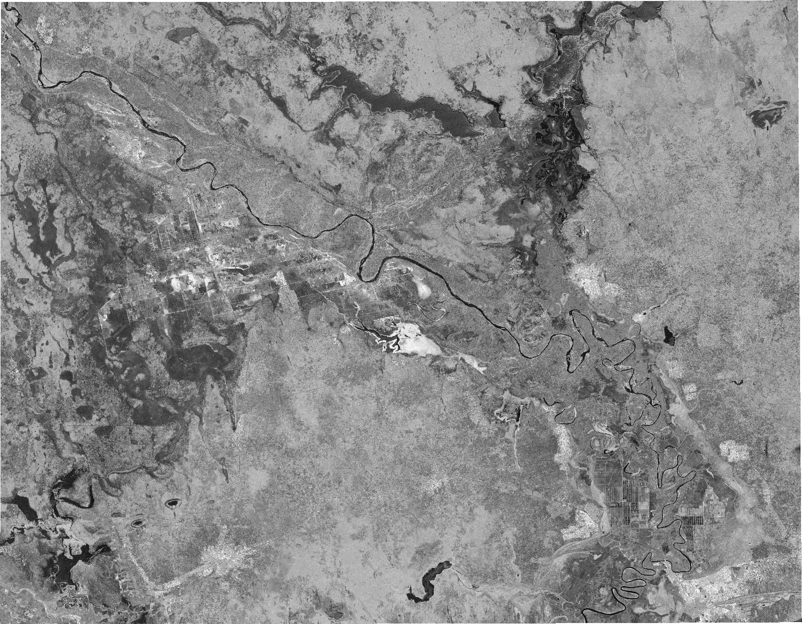
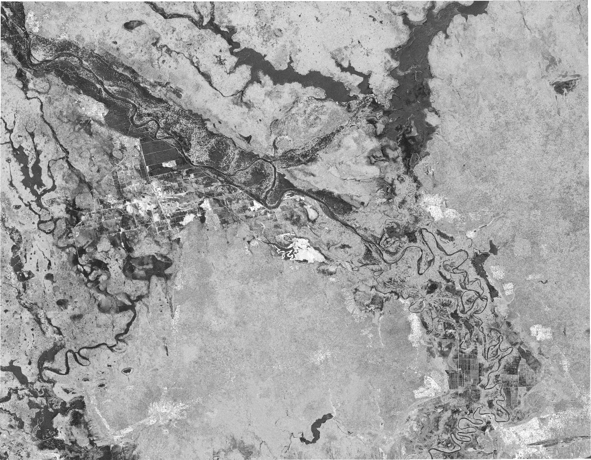
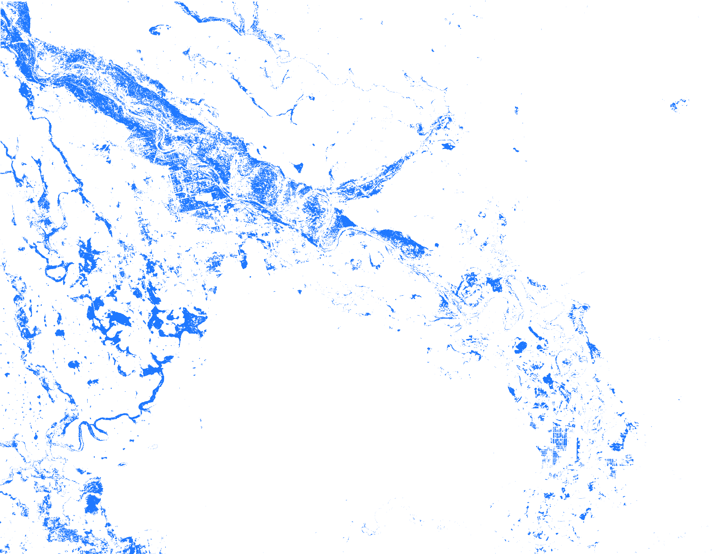

Type a flood claim. Get a verdict from NISAR radar, and a clear answer when the data cannot settle it.
Dancing with the SARs. NASA Space Apps 2026, Dubai. NISAR data is Beta.





Chókwè to Xai-Xai, Mozambique. Dark means smooth open water.
Always "as of 17 Jan 2026, 03:42 UTC". Fixed rules decide. The optional language model only fills fields.
Live: https://changeproof-dusky.vercel.app
Code (MIT): https://github.com/AqeelDEV/changeproof